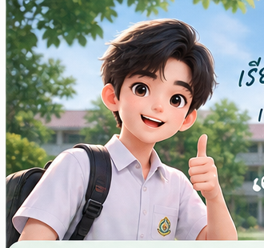

SCHOOL SAFE • PERSONAL SAFETY JOURNEY
ฝึกคิดให้พร้อม
ฝึกคิดให้พร้อม
ก่อนเจอสถานการณ์จริง
ระบบเรียนรู้ความปลอดภัยที่วิเคราะห์ 5 ทักษะ แนะนำภารกิจเฉพาะคุณ และพาไปฝึกผ่านสถานการณ์จำลองแบบเป็นขั้นตอน
✓ 5 ทักษะ✓ 4 เกม✓ 15 ด่าน Safety Route


เรียนรู้วันนี้
เพื่อพร้อมกว่าเดิม
เพื่อพร้อมกว่าเดิม
Safety Readiness
0%
เริ่มต้นฝึก5 ทักษะความปลอดภัย
การสังเกต0%
การตัดสินใจ0%
การวางแผน0%
NEXT MISSIONภารกิจแนะนำสำหรับคุณ
Assessmentวิเคราะห์ 5 ทักษะ
01
Training Planแนะนำจากจุดที่ควรฝึก
02
Safety Route15 ด่าน 5 สถานที่
03
Safety Passportดูพัฒนาการและรางวัล
04
SAFETY ALERT
คำเตือนวันนี้
เห็นความผิดปกติ อย่าเข้าไปตรวจเอง แจ้งครูหรือผู้รับผิดชอบพร้อมบอกสิ่งที่สังเกตได้จริง
MY READINESS
ดูรายละเอียด →ความพร้อมจากการฝึก
0%
เริ่มต้นฝึก
คะแนนนี้สรุปจากแบบประเมินและผลการฝึกในระบบ เพื่อช่วยวางแผนการเรียนรู้ต่อ
0เกมที่เล่น
0สถานการณ์ผ่าน
1Level
0XP
5 SAFETY SKILLS
ประเมินอีกครั้ง →ทักษะของคุณ
👁️ การสังเกต
0%
🛡️ ประเมินความเสี่ยง
0%
🎯 การตัดสินใจ
0%
🗺️ การวางแผน
0%
⚙️ การจัดการสถานการณ์
0%
YOUR SAFETY GUIDE
เพื่อนร่วมฝึกของคุณ
เริ่มจากแบบประเมิน แล้วระบบจะเลือกภารกิจที่เหมาะกับทักษะที่ควรพัฒนาต่อให้คุณ
เส้นทางการพัฒนาของฉัน
ติดตามการฝึก เกม ด่าน และความก้าวหน้าในระบบในหน้าเดียว
5 Skills4 Games15 Route StagesAchievements
เปิด Safety PassportDAILY TRAINING